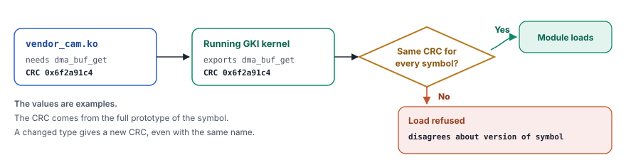
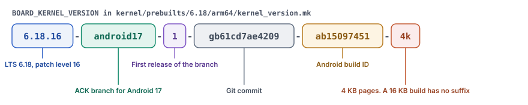
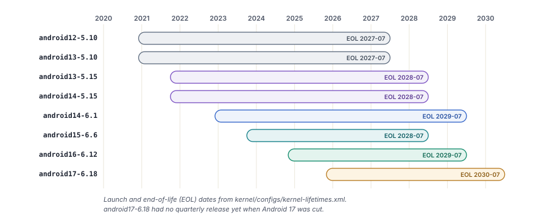
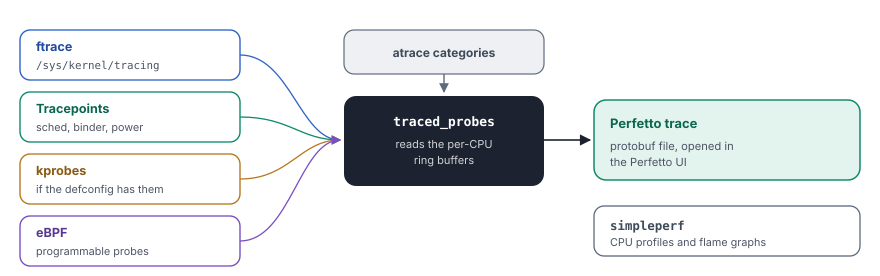
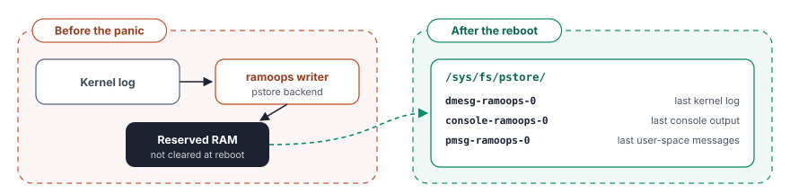

Android runs upstream Linux plus a small set of extensions. GKI splits it into one shared core and vendor modules behind a stable interface.
The Linux kernel is the base of every Android device. It manages the hardware, schedules processes and enforces the security boundaries. It also provides the low-level tools on which the framework rests, such as Binder and shared memory. Yet an Android device does not run a stock kernel from kernel.org. Over more than fifteen years, Android added drivers, changed policies and set strict configuration rules.
In chapter 4, you followed the boot until init took over. In this chapter, you look at the kernel itself. You learn what Android adds to upstream Linux and how the Generic Kernel Image (GKI) ended a decade of fragmentation. You then study the Android subsystems in the kernel, the device tree, the configuration rules, the build integration and the tools for kernel debugging. The chapter is current for Android 17, whose kernel branch is android17-6.18.
Android kernel and upstream Linux
Android does not keep a permanent fork of Linux. Google maintains a set of Android Common Kernel (ACK) branches. Each branch starts from an upstream Long-Term Support (LTS) release, such as 6.12 or 6.18, and adds a curated set of patches. The patches fall into five groups.
- Android drivers for core platform features, such as Binder, ashmem and Incremental FS.
- Scheduler and memory changes that improve interactive performance on phones.
- Security hardening beyond the upstream defaults.
- Vendor hook points that let System on Chip (SoC) vendors adapt behavior without a change to the core code.
- Test and debug support for the Android test pipeline.
![On the left, an upstream Linux LTS release forms the base. Five layers of Android patches sit on it. They are Android drivers such as Binder, binderfs, ashmem and incremental-fs, scheduler and memory changes for interactive phones, security hardening such as CFI and shadow call stack, vendor hook points and test and debug support. Together they form an Android Common Kernel branch such as android17-6.18. On the right, five Android ideas that converge with upstream. Wakelocks are now PM_WAKELOCKS, Pressure Stall Information is a standard feature, the in-kernel low memory killer is replaced by lmkd and PSI, ashmem gives way to memfd_create and ION is replaced by DMA-BUF heaps.](../../assets/img/diagrams/kn-ack-layers.svg)
The goal is a small difference from upstream. Many patches that started in the Android tree are now part of Linux. Wakelocks became PM_WAKELOCKS. Pressure Stall Information (PSI) began as a tool for Android memory management and is now a standard kernel feature. The old in-kernel low memory killer is gone, and a daemon in user space does its work. The base configuration even disables the old option explicitly.
# CONFIG_ANDROID_LOW_MEMORY_KILLER is not setSome features remain Android-specific. These are the Binder driver, Incremental FS, the vendor hooks and the accounting of CPU and input and output for each user ID (UID). The next table lists the most important kernel features that Android adds or requires.
| Feature | Option | Purpose |
|---|---|---|
| Binder IPC | CONFIG_ANDROID_BINDER_IPC | Communication between all framework processes |
| Binderfs | CONFIG_ANDROID_BINDERFS | Binder device nodes that a mount creates |
| Ashmem | CONFIG_ASHMEM | Anonymous shared memory, moving to memfd |
| Wakelocks | CONFIG_PM_WAKELOCKS | Keep the system awake during critical work |
| PSI | CONFIG_PSI | Memory pressure signals for lmkd |
| DMA-BUF heaps | CONFIG_DMABUF_HEAPS_SYSTEM | Buffers for graphics and cameras, the successor of ION |
| FUSE | CONFIG_FUSE_FS | Shared storage through MediaProvider |
| Incremental FS | CONFIG_INCREMENTAL_FS | Start an app before its APK fully arrives |
| dm-verity | CONFIG_DM_VERITY | Integrity of the system partitions |
| File encryption and fs-verity | CONFIG_FS_ENCRYPTION, CONFIG_FS_VERITY | Encryption of user data and integrity of single files |
| Accounting for each UID | CONFIG_UID_SYS_STATS, CONFIG_CPU_FREQ_TIMES | Battery and data usage for each app |
| GPU memory tracing | CONFIG_TRACE_GPU_MEM | Trace events for GPU memory |
Most of these options are mandatory in the Android base configuration under kernel/configs/. Two exceptions are CONFIG_INCREMENTAL_FS and CONFIG_DMABUF_HEAPS_SYSTEM. The GKI defconfig turns them on instead.
Think of a car maker that sells many brands. In the past, each brand changed the engine for each model. A recall for one engine fault then needed a separate fix for hundreds of engines.
Today the maker builds one standard engine. It has a standard connector with fixed pins. Each brand adds its own parts, such as seats, lights and sensors, through that connector only. The maker can now replace the engine in every car, and the parts of each brand still fit.
The standard engine is the GKI core kernel. The connector is the Kernel Module Interface (KMI). The parts of each brand are the vendor modules.
The Generic Kernel Image
The problem of fragmentation
Before GKI, every Android device shipped its own kernel. A SoC vendor such as Qualcomm or MediaTek took an ACK branch and added hundreds of patches. The device maker then added more patches for its board. The result was a deeply split ecosystem.
- A security fix reached a device only with the help of every vendor in the chain.
- Each device ran a unique kernel binary that nobody could update on its own.
- A kernel bug needed a fix in many separate trees.
- Testing at scale was not possible, because no two devices ran the same kernel.

One core, many modules
GKI, introduced with kernel 5.10 for Android 12, splits the kernel into two parts.
- The GKI core kernel is a single binary that Google builds from the ACK source. It is identical on all devices with the same kernel version.
- Vendor modules are loadable kernel modules (
.kofiles) with all code for the SoC and the device. Vendors build them against a stable Kernel Module Interface (KMI).

Google also ships GKI modules for common features, such as networking, Universal Serial Bus (USB) and file systems. They live in the system_dlkm partition. Vendor modules live in the vendor ramdisk, the vendor partition or vendor_dlkm. Here, DLKM stands for dynamically loadable kernel module.
The Kernel Module Interface
The KMI is the contract between the core kernel and the vendor modules. It has three parts.
- A symbol list. It names the kernel functions and variables that vendor modules can use. The list for kernel 6.6 has about 38,840 entries. The newer 6.18 branch ships a tighter list of about 22,961 entries.
- An Application Binary Interface (ABI) description. The file
abi.stgdescribes every exported type, structure and function signature in a form that tools can compare. It is about 7.7 MB for 6.18. - Module versioning. With
CONFIG_MODVERSIONS=y, the build computes a cyclic redundancy check (CRC) for each exported symbol from its prototype.
[abi_symbol_list]
# commonly used symbols
module_layout
__put_task_struct
utf8_data_table
[abi_symbol_list]
add_cpu
add_device_randomness
add_timer
...Google freezes the KMI for each GKI branch. After the freeze, the symbol list and the ABI never change in an incompatible way for the life of that branch. The kernel enforces this rule each time a module loads.

If a CRC in the module does not match the CRC in the running kernel, the load fails with the message disagrees about version of symbol. A vendor therefore cannot load a module that expects an older or newer form of a structure.
Vendor hooks
Vendors cannot change the core kernel. Some still need to adapt it, for example the scheduler for the layout of their central processing units (CPUs). GKI offers vendor hooks for this purpose. A hook is a tracepoint at a fixed place in the core code. A vendor module registers a callback for it.
![Two kinds of hooks. android_vh_* vendor hooks are normal tracepoint hooks that a module can attach and detach at run time, not from atomic context, for example for a memory policy. android_rvh_* restricted vendor hooks sit in hot or atomic paths, are registered once at boot and can never be detached, for example in the scheduler or for interrupts. Below, a simplified pattern. The GKI core calls a trace_android_rvh function at a fixed point, and a vendor module registers its callback once at boot.](../../assets/img/diagrams/kn-vendor-hooks.svg)
The symbol list includes the registration functions, for example android_rvh_probe_register. Typical uses are scheduler policies for big.LITTLE or DynamIQ CPU clusters, thermal logic for specific sensors, memory policies and power decisions.
GKI prebuilts in AOSP
The Android Open Source Project (AOSP) tree ships prebuilt GKI kernels for the emulator and for reference devices under kernel/prebuilts/. There is one folder for each kernel version and architecture.
kernel/prebuilts/
6.6/arm64/
kernel-6.6, kernel-6.6-gz, kernel-6.6-lz4
kernel-6.6-allsyms ... # debug images with all symbols
System.map
abi_symbollist, abi.stg # the KMI
kernel_version.mk
*.ko # about 96 GKI modules
6.12/ ...
6.18/arm64/ # Android 17
*.ko # about 104 GKI modules
16k/ # the same kernel for 16 KB pages
common-modules/virtual-device/ # modules of the emulatorEach prebuilt carries a version string in kernel_version.mk. The string tells the whole story of the build.

Release lifecycle
Each GKI branch has a launch date and an end-of-life (EOL) date. The file kernel/configs/kernel-lifetimes.xml records them, together with the quarterly GKI releases inside each branch.
<branch name="android16-6.12"
min_android_release="16"
version="6.12"
launch="2024-11-17"
eol="2029-07-01">
<lts-versions>
<release version="6.12.23" launch="2025-06-12" eol="2026-10-01"/>
<release version="6.12.30" launch="2025-07-11" eol="2026-11-01"/>
<release version="6.12.38" launch="2025-08-11" eol="2027-01-01"/>
<release version="6.12.58" launch="2025-12-11" eol="2027-04-01"/>
</lts-versions>
</branch>
<branch name="android17-6.18"
min_android_release="17"
version="6.18"
launch="2025-11-30"
eol="2030-07-01">
<no-releases reason="branch in pre-release phase"/>
</branch>
A branch lives for four to six years. Each quarterly release inside it has a shorter window of about 14 to 17 months. Branches before 5.10 count as non-GKI kernels.
The Vendor Test Suite (VTS), the framework compatibility matrix and the build read this file. Together they make sure that new devices ship with a supported kernel. A second file, approved-ogki-builds.xml, lists the exact Original Equipment Manufacturer (OEM) GKI builds, called OGKI builds, that device makers can ship. Each entry holds a SHA-256 hash of the build and a bug number for the approval.
Extend without a fork
- Google builds the core. Google builds the GKI kernel from the ACK branch and freezes the KMI.
- Google publishes the interface. The kernel, the symbol list and the headers become available to vendors.
- The vendor builds modules. The SoC vendor compiles its drivers against the KMI and registers callbacks for vendor hooks.
- The device maker assembles images. The GKI kernel goes into
boot.img, and the vendor modules go intovendor_boot,vendororvendor_dlkm. - Google ships a fix. Later, Google releases a kernel with a security fix and the same KMI. An over-the-air (OTA) update replaces
boot.img. - The modules keep working. The vendor modules load without a rebuild, because the KMI did not change.
This separation lets Google fix the kernel without the vendors. It also lets vendors update their modules without a new kernel. Device makers can combine any kernel and module versions of the same KMI generation.
Android subsystems in the kernel
Android builds on the Linux kernel but relies on several specialized subsystems to support its application framework, hardware, storage and security architecture. These subsystems provide the low-level mechanisms that Android services use to communicate, share memory, manage power and control resources.
This section examines twelve important kernel features. Each topic explains the underlying problem, the mechanism involved, the relevant kernel configuration and the interaction between kernel components and Android userspace. The configuration examples refer to the Android 16 branch b and kernel 6.12 where the source identifies those versions. Kernel configurations and implementation details vary across Android releases and device vendors.
Binder driver
Binder is Android's primary inter-process communication (IPC) mechanism. It allows applications and system services to exchange requests and responses across process boundaries. Operations such as launching an activity, binding to a service and querying a content provider typically involve Binder communication.
Binder implements a synchronous remote procedure call (RPC) model. A client packages a request into a Parcel and submits it through the Binder device using the ioctl() system call. The kernel driver routes the transaction to the target process, manages its buffers and wakes an appropriate server thread. The server processes the request and returns a response through another transaction.
Binder optimizes data transfer by mapping a buffer into the server process's address space. When a client sends a transaction, the driver copies the payload directly from the client userspace buffer into the server's mapped Binder buffer. This design requires one data copy for the request rather than the two copies associated with a conventional kernel-mediated IPC path. The server then reads the data from its mapped region.
The driver also manages remote object references, thread-pool coordination and process-death notifications. It translates Binder object handles when transactions cross process boundaries. Each transaction carries caller identity information, including the process identifier (PID) and user identifier (UID), together with the caller's SELinux security context. Services use this information when making access-control decisions.
Kernel configuration
CONFIG_ANDROID_BINDER_IPC=y
CONFIG_ANDROID_BINDERFS=ySource. kernel/configs/b/android-6.12/android-base.config, lines 18–19.
Transaction flow
- Prepare the request. The client constructs a Parcel containing the transaction code, arguments and any Binder object references.
- Submit the transaction. The client invokes
ioctl(BINDER_WRITE_READ)on its Binder device. The outgoing command contains a transaction request. - Resolve the destination. The driver identifies the target Binder node and associated process. It validates references and transaction state.
- Transfer the payload. The driver allocates space in the server's mapped Binder region and copies the request into that region.
- Wake a server thread. The driver makes the transaction available to a waiting Binder thread. The server unmarshals the Parcel and executes the requested operation.
- Return the response. The server submits a reply through the driver. Binder delivers the result to the client and wakes its waiting thread.
Memory mapping and transaction limits
Each process maps a region of memory when it opens the Binder device. The server's mapped region holds incoming transaction data. The source describes a default mapping size of 1 MiB minus two pages. With 4 KiB pages, this equals 1,040,384 bytes.
This region limits the amount of incoming transaction data that a process can accommodate at one time. Large transactions can exhaust available Binder buffer space even when the device has sufficient total memory. Applications and services therefore need to avoid unnecessarily large Parcels.
Binder also manages transaction threads. A process registers its thread pool and sets a maximum thread count through Binder commands. If existing threads cannot handle incoming work, the driver can request additional threads using BR_SPAWN_LOOPER. Threads enter the driver through ioctl(BINDER_WRITE_READ) and wait for transactions or replies.
Binder domains
Modern Android uses separate Binder domains to maintain architectural boundaries between framework and vendor components.
| Domain | Device node | Primary purpose |
|---|---|---|
| Framework Binder | /dev/binder | Application-to-framework communication |
| Hardware Binder | /dev/hwbinder | Framework-to-hardware abstraction layer communication |
| Vendor Binder | /dev/vndbinder | Vendor-internal communication |
The hardware abstraction layer (HAL) exposes interfaces between Android framework services and hardware-specific implementations. The separate Binder domains support the separation introduced by Project Treble. The exact services using each domain depend on the Android release and device implementation.
The binderfs filesystem allows Binder device nodes to be created dynamically. This replaces the need to create every Binder device as a static device node. Separate binderfs mounts also support isolated Binder device namespaces for containerized Android environments.
Code excerpt
// frameworks/native/libs/binder/IPCThreadState.cpp
#include <binder/IPCThreadState.h>
#include <sys/ioctl.h>
#include "binder_module.h"Source. frameworks/native/libs/binder/IPCThreadState.cpp.
Binder works like a dispatch office connecting different departments. A client submits a request, the dispatcher routes it to the correct department and the department returns a response. The kernel also tracks the identities of the participants and handles the communication buffers.
DMA-BUF heap system
Android's camera, graphics, video and display pipelines frequently exchange large memory buffers. A camera produces image frames, a graphics processor modifies surfaces and a display controller consumes the resulting image data. Copying each buffer between components increases memory bandwidth consumption, latency and processor overhead.
The Direct Memory Access Buffer (DMA-BUF) framework provides a standard Linux mechanism for sharing buffers between userspace and kernel drivers. Android uses DMA-BUF heaps to allocate buffers with properties suitable for particular hardware and memory requirements. Processes and device drivers can share the resulting buffers without requiring every component to allocate a separate copy.
Android previously relied on the ION allocator for many of these operations. ION was an Android-specific allocator that supported different heap types, including system memory and specially constrained memory. Starting with Linux kernel 5.10, Android moved to the upstream DMA-BUF heap framework. The newer interface standardizes allocation while allowing platform-specific heaps where required.
Heap registration and allocation
Kernel drivers register heaps with the DMA-BUF heap framework. Userspace accesses registered heaps through character devices under /dev/dma_heap/. Common examples include /dev/dma_heap/system and, on supported systems, /dev/dma_heap/linux,cma. The available devices depend on the kernel and device configuration.
An application or native service opens the appropriate heap device and calls ioctl(DMA_HEAP_IOCTL_ALLOC). The kernel allocates a buffer and returns a DMA-BUF file descriptor. This descriptor refers to the shared buffer rather than a separate copy of its contents.
A process can pass the descriptor to another process through Binder or a Unix domain socket. A recipient can map the buffer into its address space or pass the descriptor to a compatible hardware driver. The relevant drivers then access the same underlying allocation.
Kernel configuration
CONFIG_SYNC_FILE=ySource. kernel/configs/b/android-6.12/android-base.config, line 238.
The source identifies CONFIG_SYNC_FILE as the required base configuration for the userspace-facing synchronization-fence interface. DMA-BUF heap support itself is enabled through the kernel configuration used by the relevant build, including the GKI configuration. CONFIG_DMABUF_HEAPS_SYSTEM is not listed in the cited android-base.config fragment because the GKI defconfig enables it separately.
Allocation and sharing flow
- Register a heap. A kernel driver registers a heap with the DMA-BUF heap framework. The framework exposes the heap through a device node.
- Request a buffer. Userspace opens the heap and issues
DMA_HEAP_IOCTL_ALLOCwith the required allocation parameters. - Return a descriptor. The kernel returns a DMA-BUF file descriptor representing the allocated buffer.
- Transfer ownership of the reference. The application passes the descriptor to another process or subsystem. Both processes can then reference the same underlying allocation.
- Connect hardware components. Compatible camera, graphics and display drivers import or reference the buffer.
- Coordinate access. Synchronization mechanisms ensure that consumers do not use data before producers finish writing it.
Zero-copy operation and synchronization
A shared DMA-BUF does not automatically guarantee a zero-copy pipeline. Each participating component must support the buffer's memory layout and import requirements. Some hardware also requires specific alignment, memory placement or mapping constraints.
When the pipeline supports shared-buffer access, the camera can write a frame into a buffer that the graphics processor and display later consume. This avoids copying the complete frame between separate allocations. The performance benefit is especially important for high-resolution images and video.
Hardware components often operate asynchronously. A producer can submit work before the consumer is ready to access the resulting buffer. Synchronization fences represent completion conditions and coordinate these operations. The synchronization-file interface provides userspace with a mechanism to work with such fences.
The emulator's Goldfish modules include system_heap.ko, which provides a DMA-BUF system heap for the virtual device. This illustrates how virtual Android hardware uses the same general allocation model.
Source. prebuilts/qemu-kernel/arm64/6.12/goldfish_modules/system_heap.ko.
Consider several workers sharing one work surface. The camera places an image on the surface, the graphics processor modifies it and the display reads the final result. They do not need separate copies of the same image. Synchronization signals indicate when each worker can safely use the surface.
FUSE passthrough and storage access
Android's shared-storage architecture must balance application compatibility, access control and file-operation performance. Applications use familiar paths such as /storage/emulated/0/Download/ to access shared files. However, different applications must receive appropriate access to those files.
Android's storage implementation changed over time. Through Android 10, SDCardFS provided application-specific views of shared storage. Android 11 moved away from SDCardFS toward Filesystem in Userspace (FUSE), with MediaProvider handling important storage operations. Android 12 introduced FUSE passthrough to reduce the overhead of routing every file operation through userspace.
FUSE separates the filesystem interface presented to applications from the underlying storage implementation. The kernel's Virtual Filesystem (VFS) layer directs file operations to the appropriate mounted filesystem. For a FUSE mount, the kernel communicates with a userspace daemon when an operation requires userspace handling. In Android's shared-storage architecture, MediaProvider performs the relevant permission checks and storage management.
Ordinary FUSE operation can introduce additional context switches and data-transfer overhead. Each operation that requires userspace mediation can involve a request to MediaProvider and a corresponding response. Passthrough reduces this overhead for eligible files by allowing the kernel to direct subsequent data operations to the underlying filesystem.
Kernel configuration
CONFIG_FUSE_FS=ySource. kernel/configs/b/android-6.12/android-base.config, line 69.
Passthrough open and read flow
- Open the shared file. An application calls
open()on a path such as/storage/emulated/0/Download/photo.jpg. - Route through the VFS. The VFS identifies the FUSE mount and forwards the open request to the FUSE kernel module.
- Send the open request. The FUSE module sends an
OPENrequest to the userspace daemon. - Check access permissions. MediaProvider evaluates whether the application can access the requested file. It opens the corresponding file on the underlying filesystem when access is permitted.
- Configure passthrough. MediaProvider supplies the information required for the kernel to associate the FUSE file with the underlying file.
- Perform data operations. Eligible
read()andwrite()operations proceed through the kernel to the underlying filesystem without routing each operation through MediaProvider.
The lower filesystem and the slow path
The underlying filesystem is commonly ext4 or F2FS, depending on the device and partition configuration. Passthrough allows eligible operations to reach this lower filesystem directly. Operations that require additional userspace handling continue through the ordinary FUSE path.
Passthrough does not eliminate the need for authorization. MediaProvider still checks access during the initial open operation. The optimization reduces repeated userspace involvement after the kernel establishes the authorized passthrough association.
The mechanism also does not mean that every operation bypasses userspace. Eligibility depends on the FUSE implementation and the operation involved. Metadata changes, unsupported operations and other requests requiring userspace processing continue to use the relevant FUSE handling path.
This distinction is important when analyzing performance. The largest benefit comes from reducing overhead during repeated data transfers. Permission checks and other operations retain the behavior required by the storage implementation.
Imagine a security officer checking a visitor's authorization before granting entry to a storage room. After verification, the visitor can collect approved items directly instead of requesting assistance for every item. FUSE passthrough follows a similar model, while operations requiring further checks remain under userspace mediation.
Incremental FS
Incremental Filesystem (IncFS) allows Android to begin using an application package before all its data arrives. Large applications can contain substantial assets, including textures, audio, video and other resources. Downloading the entire package before installation or execution delays the point at which the application becomes usable.
IncFS supports Android's incremental application installation and data-delivery mechanisms. It presents files through a filesystem interface while allowing their contents to arrive progressively. The kernel tracks which blocks are available and coordinates reads that require data that has not yet been delivered.
The filesystem divides file data into blocks. The source identifies a data block size of 4,096 bytes. Each block can be available independently of other blocks in the same file. This allows the system to supply essential application data first and deliver additional content as execution demands it.
When a process reads an available block, the kernel returns its data. When a requested block is missing, the kernel waits for the userspace data loader to provide it. The loader discovers outstanding requests through the .pending_reads interface, retrieves the required data and fills the missing blocks. The waiting read then completes.
Kernel interface and configuration
The userspace interface is defined in the Incremental FS kernel header. The following excerpt shows the filesystem name, block size and two important control operations.
#define INCFS_NAME "incremental-fs"
#define INCFS_MAGIC_NUMBER (0x5346434e49ul & ULONG_MAX)
#define INCFS_DATA_FILE_BLOCK_SIZE 4096
#define INCFS_IOC_CREATE_FILE \
_IOWR(INCFS_IOCTL_BASE_CODE, 30, struct incfs_new_file_args)
#define INCFS_IOC_FILL_BLOCKS \
_IOR(INCFS_IOCTL_BASE_CODE, 32, struct incfs_fill_blocks)Source. system/incremental_delivery/incfs/kernel-headers/linux/incrementalfs.h.
The interface also defines INCFS_IOC_GET_FILLED_BLOCKS, which allows userspace to retrieve information about blocks already present. These operations let the data loader create files, supply data and track delivery progress.
The kernel option CONFIG_INCREMENTAL_FS enables IncFS support. The source identifies this option as part of the GKI defconfig rather than the cited android-base.config fragment.
Source. kernel/configs/ and the kernel's GKI defconfig for the relevant branch.
Missing-block read flow
- Prepare the mount. Android's package-management and incremental-delivery components prepare an IncFS mount for the application package.
- Create files and supply initial data. Userspace creates the required filesystem entries and fills the blocks needed for initial startup.
- Read a file. The application accesses a file through normal filesystem operations.
- Check block availability. IncFS returns a block immediately when its contents are already present.
- Register a pending read. If the block is missing, the kernel waits for the data loader and exposes the outstanding request through
.pending_reads. - Fill the missing block. The loader retrieves the required data and supplies it through the IncFS interface. The kernel completes the blocked read.
Supporting files and integrity
IncFS exposes special files for monitoring and coordination. .pending_reads identifies blocks that userspace needs to supply. .log records filesystem activity for debugging. .blocks_written tracks writing progress, while .index maps file identifiers to filesystem inodes. The .incomplete interface identifies files that are not yet fully available.
The filesystem also supports compression. Its interface identifies LZ4 and Zstandard (Zstd) as supported compression algorithms, alongside uncompressed data. Compression reduces transferred or stored data where the relevant implementation uses it, although decompression introduces processing overhead.
Integrity checking is important because blocks arrive over time. IncFS supports per-file hash trees and integration with Filesystem Verity (fs-verity). These mechanisms help detect data that does not match the expected integrity information.
The userspace implementation resides under system/incremental_delivery/incfs/. Its components include the core IncFS library, native development kit interfaces, mount tracking and kernel interface headers. The broader incremental-delivery implementation also contains the data-loader service interface.
Ashmem and shared memory
Android shared memory (ashmem) provides a mechanism for multiple processes to access the same memory region. Shared memory is useful when components need to exchange large amounts of data without repeatedly copying it between process address spaces. Examples include native libraries and framework components that exchange data through shared buffers.
Ashmem provides named, reference-counted shared memory regions. Userspace creates a region and receives a file descriptor that represents it. The process can share the descriptor with other processes, which can map the same region into their address spaces. The kernel maintains the region's lifecycle through its references.
Ashmem includes memory-reclamation controls that distinguish it from ordinary shared-memory interfaces. Processes can pin and unpin pages to indicate which pages must remain available. The kernel can reclaim eligible unpinned pages under memory pressure. Components must account for the possibility that reclaimed pages no longer contain the original contents.
Ashmem also restricts changes to memory protection. The ASHMEM_SET_PROT_MASK ioctl allows the permitted protection mask to be narrowed. Once restrictions are applied, the interface does not allow permissions to be expanded beyond the established mask.
Kernel configuration
CONFIG_ASHMEM=ySource. kernel/configs/b/android-6.12/android-base.config, line 20.
Shared-memory lifecycle
- Create a region. A process requests an ashmem region and receives a file descriptor.
- Set region properties. The process configures relevant size and protection properties.
- Share the descriptor. The process transfers the descriptor to another process through a supported descriptor-passing mechanism.
- Map the region. Both processes map the same underlying region into their virtual address spaces.
- Manage page availability. Components pin pages that require retention and unpin pages that are eligible for reclamation.
- Release the region. When the last reference closes, the kernel releases the region and its associated resources.
Ashmem and memfd
Ashmem remains available for compatibility with existing Android components. Newer implementations increasingly use the standard Linux memfd_create() interface. This interface creates an anonymous file descriptor that supports shared memory and works with standard file-sealing mechanisms.
The distinction matters when developing native code that runs across different Android releases. Existing code can rely on ashmem-specific operations, while newer code can use memfd where the required behavior and compatibility requirements permit it.
File sealing through F_ADD_SEALS belongs to the memfd mechanism. It provides controls over operations such as modifying file contents or changing file size. These seals are distinct from ashmem's protection-mask mechanism.
The source identifies the compatibility implementation in system/core/libcutils/ashmem-dev.cpp. This implementation provides the userspace path associated with ashmem compatibility and memfd.
Source. system/core/libcutils/ashmem-dev.cpp.
Wakelocks and power management
Mobile devices must conserve battery power without interrupting important operations. Android needs to suspend the system during idle periods but keep it awake while critical work remains unfinished. Wakelocks provide a mechanism for coordinating this behavior between kernel power management and Android userspace.
A wakelock represents a requirement that prevents the system from entering suspend. Android's PowerManager service, running inside system_server, coordinates power-related requests and manages wakelock usage. The kernel exposes interfaces that allow userspace to acquire and release named wakelocks.
Android follows an opportunistic suspend model. The system attempts to suspend when active requirements no longer prevent it. A component that requires continued execution holds a wakelock while the operation remains active. Once the work finishes, the component releases the wakelock, allowing suspend when no other blockers remain.
Wakelocks do not force the processor to remain active indefinitely under every condition. Their purpose is to prevent system suspend while a protected requirement exists. Actual power behavior also depends on hardware capabilities, device power states and other kernel or platform conditions.
Kernel configuration
CONFIG_PM_WAKELOCKS=y
# CONFIG_PM_AUTOSLEEP is not setSource. kernel/configs/b/android-6.12/android-base.config, lines 12 and 210.
The first option enables the kernel wakelock interface. The second disables the kernel autosleep mechanism because Android coordinates the sleep and wake cycle from userspace through PowerManager.
Wakelock interfaces
The kernel exposes two relevant sysfs paths.
/sys/power/wake_lockaccepts a wakelock name to acquire./sys/power/wake_unlockaccepts a wakelock name to release.
The userspace power-management implementation uses these interfaces to maintain active wake requirements. The system configuration and permissions control access.
Suspend coordination flow
- Identify required work. An application or system component begins an operation that requires the device to remain awake.
- Request a wakelock. The relevant framework or native component requests a wake requirement through Android's power-management mechanisms.
- Acquire the kernel wakelock. PowerManager or its associated implementation establishes the corresponding kernel state.
- Perform the operation. The system remains protected from suspend while the active wakelock blocks it.
- Release the wakelock. The component releases the requirement when the protected work finishes.
- Evaluate suspend eligibility. The system can enter suspend when no remaining wakelock or other condition prevents it.
Power-management implications
Wakelocks affect battery consumption because they can delay suspend. A wakelock held longer than necessary prevents the system from reaching an appropriate low-power state. Developers therefore need to acquire wakelocks only for work that requires continued execution and release them promptly.
The framework can coordinate multiple independent requirements. Releasing one wakelock does not necessarily cause suspend if another component still holds a wakelock. This allows different services to protect their operations without directly coordinating every activity with one another.
Low Memory Killer Daemon (lmkd)
Android applications compete for a limited amount of physical memory. The system must preserve foreground responsiveness while reclaiming memory from less important processes. When memory pressure becomes severe, Android needs a mechanism to select processes for termination.
Older Android kernels included an in-kernel low-memory killer. Modern Android replaces this mechanism with the userspace Low Memory Killer Daemon (lmkd). The daemon combines kernel memory-pressure information with process-importance data from ActivityManager. This allows it to make termination decisions based on both system conditions and the relative importance of applications.
lmkd monitors Pressure Stall Information (PSI), which measures the time tasks spend stalled because of resource contention. It also reads statistics from /proc/meminfo, /proc/vmstat and /proc/zoneinfo. On supported configurations, it monitors memory pressure through cgroup interfaces as well.
ActivityManager, running inside system_server, supplies process information and out-of-memory adjustment scores. These scores represent the relative importance of processes. The daemon combines this information with current memory conditions to decide when and which processes to terminate.
Kernel configuration and interfaces
The Android 16 base configuration explicitly disables the older in-kernel low-memory killer. Modern Android instead uses the userspace daemon and kernel pressure-monitoring interfaces.
# CONFIG_ANDROID_LOW_MEMORY_KILLER is not setSource. kernel/configs/b/android-6.12/android-base.config, line 2.
The PSI interface is essential to the pressure-based design. The following settings from lmkd define its default monitoring window and polling intervals.
#define DEFAULT_PSI_WINDOW_SIZE_MS 1000
#define PSI_POLL_PERIOD_SHORT_MS 10
#define PSI_POLL_PERIOD_LONG_MS 100Source. system/memory/lmkd/lmkd.cpp, lines 122–126.
Memory-pressure and process-selection flow
- Monitor memory conditions.
lmkdobserves PSI events and reads kernel memory statistics. These inputs indicate whether memory pressure increases. - Receive process priorities. ActivityManager supplies the process list and corresponding adjustment scores through the daemon's communication interface.
- Evaluate pressure. The daemon processes pressure events and estimates whether the system needs to reclaim additional memory.
- Select a victim. It considers process importance and current memory conditions. Processes with higher adjustment scores generally have lower importance.
- Terminate the selected process. The daemon uses supported mechanisms such as
pidfd_send_signal()or cgroup-based termination, depending on the path. - Record the outcome. The daemon records relevant statistics and continues monitoring the system for further pressure.
Understanding PSI
PSI reports the proportion of time that tasks are delayed because resources are unavailable. Memory PSI focuses on stalls associated with memory pressure. This provides information about the effect of memory shortages on running workloads, rather than only reporting the amount of free memory.
A system with little free memory does not always require an immediate process kill. Reclaimable caches and other memory-management mechanisms can free memory without terminating applications. PSI helps lmkd detect situations in which memory pressure affects execution.
The daemon monitors PSI through interfaces such as /proc/pressure/memory. Its implementation uses an event loop to coordinate pressure notifications, process information and termination work. The source also includes reaper threads, statistics reporting and a watchdog.
Understanding adjustment scores
The source defines example adjustment values for different process categories.
#define SYSTEM_ADJ (-900)
#define PERCEPTIBLE_APP_ADJ 200
#define PREVIOUS_APP_ADJ 700Source. system/memory/lmkd/lmkd.cpp, lines 84–85 and 103.
These values illustrate how Android distinguishes process importance. System processes receive highly protected scores, while a previously foreground application has a higher score. Higher adjustment scores generally make a process a stronger candidate for termination when memory pressure requires it.
The exact decision also depends on the current daemon implementation and memory-pressure state. lmkd does not simply terminate the process with the highest score whenever memory becomes low. It evaluates the situation and determines whether termination is necessary.
Important implementation files
The daemon's implementation resides under system/memory/lmkd/. lmkd.cpp contains the main logic. reaper.cpp implements process-termination operations, while watchdog.cpp handles watchdog functionality. statslog.cpp records statistics, and libpsi/psi.cpp provides the PSI-monitoring interface.
Imagine a building with limited emergency power. When demand exceeds capacity, the manager first reduces power to less essential activities while preserving critical services. lmkd follows a comparable prioritization approach. It considers both the severity of the shortage and the importance of each process.
dm-verity and verified boot
Android must detect unauthorized modifications to operating system software. If an attacker changes system files or executable code, the device can no longer rely on the integrity of its installed software. Verified boot and filesystem integrity mechanisms help establish and maintain trust in the software loaded by the device.
Device Mapper Verity (dm-verity) is a kernel device-mapper target that verifies the integrity of block-device data. Android uses it to protect verified partitions, including important operating system partitions. The kernel checks data as it is read, rather than trusting that stored blocks remain unchanged after startup.
dm-verity uses a Merkle tree to organize hashes of the partition's data blocks. Each leaf represents the hash of a data block. Higher levels contain hashes of lower-level hash values. The resulting root hash represents the integrity of the complete protected data set.
The verified boot chain establishes trust in the root hash and associated boot metadata. The bootloader verifies the relevant signed information before transferring control to the kernel. The kernel then uses the trusted integrity information when validating protected partition reads. A mismatch indicates that the read data does not match the expected contents.
Kernel configuration
CONFIG_DM_VERITY=y
CONFIG_DM_DEFAULT_KEY=y
CONFIG_DM_SNAPSHOT=y
CONFIG_FS_ENCRYPTION=y
CONFIG_FS_ENCRYPTION_INLINE_CRYPT=y
CONFIG_FS_VERITY=y
CONFIG_BLK_INLINE_ENCRYPTION=ySource. kernel/configs/b/android-6.12/android-base.config.
These options support different parts of the broader storage-security architecture. CONFIG_DM_VERITY enables block-level integrity verification. CONFIG_DM_DEFAULT_KEY supports the default-key device-mapper target. CONFIG_DM_SNAPSHOT supports snapshot functionality used in relevant update configurations. The filesystem-encryption and inline-encryption options support data confidentiality, while CONFIG_FS_VERITY enables per-file integrity verification.
Merkle tree verification
- Establish trusted boot information. The bootloader verifies the signed boot metadata and the relevant root-hash information.
- Configure the protected partition. Android's storage initialization configures the device-mapper target with the expected integrity information.
- Request a block. A process reads data from the protected filesystem. The request reaches
dm-veritythrough the block-device stack. - Calculate the hash. The driver computes the hash of the requested data block and checks it against the corresponding hash-tree information.
- Validate the hash path. The driver verifies the relevant hierarchy of hashes against the trusted root hash.
- Return or reject the read. The kernel returns verified data or applies the configured error-handling policy when verification fails.
Error-handling modes
Android supports different dm-verity error-handling modes. The mode is selected through boot configuration and translated by Android's filesystem initialization code.
- Enforcing. The
restart_on_corruptionmode restarts the device when a corrupted block is read. - Panicking. The
panic_on_corruptionmode causes a kernel panic when corruption is detected. - Logging. The
ignore_corruptionmode logs verification failures but allows the read to succeed. It is intended for development use. - EIO. The
androidboot.veritymode=eioconfiguration allows the read to return an input/output error (EIO) while the device continues running.
When androidboot.veritymode is absent, the source states that Android's fs_mgr defaults to enforcing behavior. The EIO behavior therefore does not apply automatically when the property is missing.
Source. system/fs/fs_mgr/libfs_avb/avb_util.cpp.
File-based encryption
File-Based Encryption (FBE) protects user data using encryption keys associated with files and user states. Unlike full-disk encryption with a single data-access boundary, FBE allows Android to protect different files using different keys. This supports Direct Boot, which allows selected system functions to operate before the user unlocks the device.
The source identifies the following encryption parameters in the emulator's filesystem table.
/dev/block/vdc /data ext4 ... fileencryption=aes-256-xts:aes-256-cts,...Source. device/generic/goldfish/board/fstab/arm.
In this example, aes-256-xts provides file-content encryption. aes-256-cts provides filename encryption. These mechanisms protect data confidentiality and limit exposure of sensitive file information when the relevant keys are unavailable.
Filesystem Verity
Filesystem Verity (fs-verity) applies integrity verification to individual files. dm-verity protects a block-device view of an entire partition, whereas fs-verity protects selected files within a filesystem.
Like dm-verity, fs-verity uses a Merkle tree to verify file contents. Once enabled for a file, the mechanism detects content changes that do not match the expected integrity information. Android can use it to protect selected installed packages, system files and downloaded content.
APK signature verification operates at a different layer. It verifies application package signatures, while fs-verity verifies file contents through the filesystem. These mechanisms serve complementary purposes.
eBPF integration
Android uses extended Berkeley Packet Filter (eBPF) programs to implement networking, resource accounting, monitoring and security-related functions. These programs execute inside the kernel at supported attachment points. They let Android apply policies and collect information without requiring a separate custom kernel implementation for every use case.
The eBPF architecture separates program loading from program execution. Android's bpfloader service loads supported BPF objects during boot. The kernel verifier checks whether each program satisfies the rules required for safe execution. On supported configurations, the Just-In-Time (JIT) compiler translates verified programs into native machine instructions.
BPF programs interact with kernel events and data through maps and hook points. Maps store information such as per-UID traffic counters and network-policy entries. Hook points allow programs to run when relevant events occur, including packet processing, socket activity and selected kernel tracepoints.
Android uses these mechanisms for per-UID network traffic accounting, per-application network restrictions, tethering packet processing and CPU-frequency tracking. These functions support system features such as the Settings app's data-usage displays and per-application data controls.
Kernel configuration
CONFIG_BPF_JIT=y
CONFIG_BPF_SYSCALL=y
CONFIG_CGROUP_BPF=y
CONFIG_NETFILTER_XT_MATCH_BPF=y
CONFIG_NET_ACT_BPF=y
CONFIG_NET_CLS_BPF=y
CONFIG_BPF_JIT_ALWAYS_ON=ySource. kernel/configs/b/android-6.12/android-base.config.
The source identifies CONFIG_BPF_JIT_ALWAYS_ON=y as an additional requirement in the Android 16 kernel 6.12 configuration. This configuration keeps JIT compilation enabled for the relevant BPF execution path.
Program loading and execution flow
- Prepare the BPF objects. Android supplies BPF program objects under
/system/etc/bpf/and can also provide vendor objects under/vendor/etc/bpf/. - Load the programs. The
bpfloaderservice submits supported programs to the kernel through thebpf()system call. - Verify safety. The kernel verifier checks program instructions, memory accesses and permitted operations.
- Prepare execution. The kernel uses the configured BPF execution mechanism, including JIT compilation where applicable.
- Attach to a hook. Android services attach programs to supported networking, control-group or tracing points.
- Process events. Programs evaluate events, update maps or return decisions. Userspace services read or update relevant map entries as required.
Loader integration and pinned objects
The source identifies system/bpf/loader/bpfloader.rs as part of the BPF loader implementation. The loader handles a defined set of system BPF objects. It also supports loading vendor-supplied objects through the relevant loader implementation.
The loader can pin programs and maps in the BPF filesystem at /sys/fs/bpf/. Pinning provides stable filesystem references that other services can use. Networking services such as netd and the tethering service can then attach programs or interact with the associated maps.
Networking and accounting
Per-UID traffic accounting uses BPF programs attached to appropriate socket or control-group hooks. These programs count bytes sent and received by network identity. Android uses the resulting data for traffic statistics and per-application data controls.
BPF-based firewall functions apply network policies to application traffic. The relevant programs evaluate packets or socket events against policy information. This can provide efficient per-application control without routing every decision through a userspace networking daemon.
Tethering uses BPF programs to process packet forwarding for supported USB and Wi-Fi configurations. Moving eligible packet-processing work into the kernel reduces userspace involvement in the forwarding path.
CPU-frequency tracking
Android also uses BPF programs attached to scheduler tracepoints to track time spent by processes at different CPU frequencies. This information supports per-UID resource accounting and battery-use attribution. The data helps the system distinguish workloads that consume different amounts of CPU time at different operating frequencies.
Important distinctions
eBPF is not a replacement for every kernel driver or every security mechanism. Programs run only at supported hook points and within the capabilities permitted by the verifier. Their behavior also depends on the maps, permissions and attachment configuration supplied by Android.
The BPF verifier is a key safety boundary. It checks programs before execution, but a verified program still needs correct policy logic and suitable permissions. Incorrect policy data can produce incorrect results even when the program itself passes verification.
SELinux enforcement
Security-Enhanced Linux (SELinux) provides mandatory access control (MAC) in Android. It supplements traditional Linux user, group and file-permission checks with a policy that governs interactions between processes and protected objects. Android uses SELinux to confine applications, isolate system services and limit the effects of compromised components.
SELinux assigns security contexts to processes and objects. A process context identifies the domain in which the process operates. File, socket and other object contexts identify the security labels that apply to those resources. The active policy defines which operations are permitted between the relevant contexts.
The kernel enforces this policy through the Linux Security Module (LSM) framework. When a process attempts a protected operation, the relevant kernel path invokes an LSM security hook. SELinux evaluates the request against the loaded policy and denies operations that the policy does not authorize. Production Android devices run SELinux in enforcing mode.
SELinux policy is developed in the Android source tree and compiled into a form that the kernel can load. Policy rules describe permitted interactions between domains and object types. Android's policy also accounts for distinctions between platform components, applications and vendor components. This separation helps maintain security boundaries across the system architecture.
Kernel configuration
CONFIG_SECURITY=y
CONFIG_SECURITY_NETWORK=y
CONFIG_SECURITY_SELINUX=y
CONFIG_DEFAULT_SECURITY_SELINUX=y
CONFIG_AUDIT=ySource. kernel/configs/b/android-6.12/android-base.config, lines 57 and 224–226 for the SELinux options. CONFIG_AUDIT=y enables the audit subsystem used to record relevant security events.
Access-control flow
- Label the participants. Android associates the process and target object with their security contexts.
- Attempt an operation. A process requests access to a file, socket, IPC object or another protected resource.
- Invoke the security hook. The kernel reaches an LSM hook associated with the operation.
- Evaluate the policy. SELinux checks the source context, target context, object class and requested permission against the loaded policy.
- Enforce the decision. The kernel permits the operation when authorized and denies it when the policy does not permit it.
- Record relevant events. The audit subsystem records applicable denials and other security events according to the active audit configuration.
SELinux and application isolation
Android applications run within security domains that restrict their access to system resources. A compromised application remains subject to the kernel's SELinux checks. The application cannot gain unrestricted access to protected resources simply because it exploited a vulnerability within its own process.
System services also run under designated domains. A service that needs access to a protected file, device or socket requires an appropriate policy rule. This reduces the authority available to individual components and helps contain compromise.
SELinux complements other security mechanisms rather than replacing them. Traditional discretionary access control (DAC) still applies. Android application permissions, process isolation, seccomp filters and hardware-backed protections address different parts of the security model.
Audit and policy debugging
When SELinux denies an operation, the kernel can generate an audit record containing details about the attempted access. Engineers can use these records to identify the source domain, target context, object class and denied permission.
An audit denial does not automatically indicate a kernel defect. It can reflect a legitimate policy restriction, an incorrect service configuration or an incomplete policy rule. Engineers need to determine the intended access pattern before modifying the policy. Broadly allowing a denied operation weakens isolation and can expose resources unnecessarily.
Seccomp filter
Secure computing mode (seccomp) restricts the system calls a process can invoke. System calls form the interface through which userspace requests kernel operations, including file access, process management, memory mapping and network communication. Restricting this interface reduces the kernel functionality available to a compromised process.
Android uses seccomp filters based on classic Berkeley Packet Filter (BPF) programs. These filters inspect system-call numbers and, where required, their arguments. The filter returns an action that determines how the kernel handles the request. Depending on the policy, an operation can proceed, return an error or trigger a signal.
Seccomp complements SELinux. SELinux controls access to resources and interactions between security contexts. Seccomp limits the system-call interface available to a process. A process can therefore face both resource-level restrictions and restrictions on the kernel operations it can invoke.
Android maintains architecture-specific seccomp policies. During application process specialization, Android installs an appropriate filter in the child process created by Zygote. The policy selected depends on the process type and the applicable Android implementation.
Kernel configuration
CONFIG_SECCOMP=y
CONFIG_SECCOMP_FILTER=ySource. kernel/configs/b/android-6.12/android-base.config, lines 222–223.
Filter installation and execution flow
- Create the process. Zygote forks a child process for an application or another supported process type.
- Select the policy. Android determines the applicable seccomp filter for the process architecture and role.
- Install the filter. Process-specialization code installs the filter before normal application execution continues.
- Issue a system call. The process requests a kernel operation through the system-call interface.
- Evaluate the request. The kernel executes the seccomp filter against the system-call number and any relevant arguments.
- Apply the filter action. The kernel permits the call or applies the configured restriction. A policy that returns a kill action can terminate the process with
SIGSYS.
Android process integration
The source identifies SpecializeCommon() in frameworks/base/core/jni/com_android_internal_os_Zygote.cpp as part of the process-specialization path. This code calls SetUpSeccompFilter() after the fork. The implementation selects the relevant filter for the process being created.
The filters differ according to architecture and process role. Android can use distinct policies for application processes, application Zygotes and system processes. This allows the permitted system-call interface to reflect the requirements of each process category.
Code excerpt
// frameworks/base/core/jni/com_android_internal_os_Zygote.cpp
SetUpSeccompFilter();Source. frameworks/base/core/jni/com_android_internal_os_Zygote.cpp.
Filter actions and failure behavior
A seccomp policy does not have to terminate a process for every disallowed call. The filter's return action determines the outcome. Depending on the configured action, the kernel can deny the request with an error, generate a notification or terminate the process.
The Android source describes policies that terminate a process with SIGSYS when a system call violates the applicable allowlist. Engineers must inspect the actual filter to determine which system calls and actions apply. The behavior is not identical for every denied operation.
Seccomp filters also have limitations. They cannot replace access-control checks on files and other resources. A permitted system call can still fail because of ordinary permissions or other kernel restrictions. Conversely, restricting a system call does not establish authorization for operations performed through other permitted interfaces.
Imagine a worker who has permission to enter a laboratory but can use only a fixed set of tools. SELinux governs access to the laboratory and its resources. Seccomp restricts the operations the worker can request from the underlying system, even after entering the laboratory.
Cgroups and resource control
Linux control groups (cgroups) organize processes so the kernel can account for and control resource usage. Android uses cgroups to support process scheduling, CPU accounting, background-process management and selected network controls. These mechanisms help the system allocate resources according to application importance and current device activity.
The init process establishes the cgroup hierarchy of Android, and system services help to manage it. Processes are assigned to groups based on their roles and states. The system can update these assignments as applications move between foreground and background states.
Different cgroup controllers address different resource-management requirements. CPU accounting tracks CPU consumption. The CPU scheduler controller supports scheduling policies and priorities. The freezer controller allows processes in a group to be frozen and resumed. The BPF controller permits eBPF programs to attach to relevant control-group hooks.
Android uses groups such as top-app, foreground, background and rt to distinguish scheduling requirements. These names reflect Android's process-management design, although exact group layouts and controller configurations vary across kernel versions and devices.
Kernel configuration
CONFIG_CGROUPS=y
CONFIG_CGROUP_BPF=y
CONFIG_CGROUP_CPUACCT=y
CONFIG_CGROUP_FREEZER=y
CONFIG_CGROUP_SCHED=ySource. kernel/configs/b/android-6.12/android-base.config, lines 34–38.
Controllers and Android use cases
| Controller | Kernel option | Android use |
|---|---|---|
| CPU accounting | CONFIG_CGROUP_CPUACCT | Tracks CPU time for resource accounting |
| Freezer | CONFIG_CGROUP_FREEZER | Freezes and resumes eligible background processes |
| CPU scheduler | CONFIG_CGROUP_SCHED | Supports scheduling policies for application groups |
| BPF | CONFIG_CGROUP_BPF | Enables eBPF attachment and policy enforcement at cgroup hooks |
These controllers do not all perform the same operation. CPU accounting measures resource consumption, while scheduling and freezing affect process execution. The BPF controller provides a mechanism for attaching eBPF programs to supported cgroup operations.
Cgroup initialization
The Android emulator's initialization script provides an example of CPU scheduling-group setup.
on init
mkdir /dev/cpuctl/foreground
mkdir /dev/cpuctl/background
mkdir /dev/cpuctl/top-app
mkdir /dev/cpuctl/rtSource. device/generic/goldfish/init/init.ranchu.rc, lines 49–52.
These directories represent scheduling groups in the emulator's configuration. Their exact names and locations are implementation details. Production devices can use different cgroup mounts and hierarchies, depending on the kernel and Android release.
Process assignment and resource-control flow
- Initialize the hierarchy. Android's
initprocess creates the required cgroup hierarchy and configures the available controllers. - Classify the process. Android identifies the process's role and current state, using information from system services.
- Assign group membership. The system places the process in an appropriate cgroup.
- Apply controller settings. The kernel applies the relevant scheduling, accounting, freezing or BPF configuration.
- Update the assignment. Android moves the process when its importance or activity state changes.
- Enforce resource control. The kernel applies the active controller behavior to processes in the group.
Android process groups
top-app. Represents the application receiving top-level foreground treatment.foreground. Contains processes that require foreground-related scheduling treatment.background. Contains processes running in the background.rt. Represents a real-time scheduling group for eligible workloads, including certain audio or sensor-processing paths.
Group membership is not a substitute for application permissions. It affects resource management rather than granting access to protected data. Similarly, a process's scheduling group does not, by itself, determine whether the system terminates it under memory pressure.
Resource accounting and scheduling
CPU accounting helps Android attribute processor consumption to processes or groups. Scheduling controls influence how the processor allocates execution time among workloads. These mechanisms contribute to responsiveness when a foreground application competes with background tasks.
The freezer controller provides another form of resource management. Freezing a process stops its execution without terminating it. Android can use this behavior for eligible background processes, subject to the platform's process-management policy and controller configuration.
Cgroups also integrate with eBPF. A BPF program attached to a cgroup hook can apply network-related policies or collect traffic statistics. This lets Android associate certain network operations with application identities and enforce policies at kernel hook points.
Device tree and board support
On ARM and RISC-V systems, the kernel cannot ask the hardware which devices exist. The bootloader therefore passes a device tree, a data structure that describes the hardware of the board. Systems with x86 processors use the Advanced Configuration and Power Interface (ACPI) instead. The Android configuration requires one of the two.
<!-- CONFIG_ACPI || CONFIG_OF -->
<group>
<conditions>
<config>
<key>CONFIG_ACPI</key>
<value type="bool">n</value>
</config>
</conditions>
<config>
<key>CONFIG_OF</key>
<value type="bool">y</value>
</config>
</group>If ACPI is off, Open Firmware (CONFIG_OF), the device tree support of the kernel, must be on.
From source to a bound driver
Device tree data passes through several formats.
- DTS (Device Tree Source) is a readable text file for one board.
- DTSI is an include file with shared parts, usually the definition of the SoC.
- DTB (Device Tree Blob) is the compiled binary that the kernel reads.
- DTBO (Device Tree Blob Overlay) is a compiled overlay that the bootloader applies on top of a base DTB.
![A shared soc.dtsi, a board.dts that includes it and an overlay source panel.dts go into the compiler dtc. It produces a base .dtb and .dtbo overlays that live in the dtbo partition. The bootloader picks the overlays by board ID, merges them with the base and passes the tree to the kernel, which parses it. Below, a node virtio_mmio with compatible virtio,mmio, a reg range and interrupts. The kernel registers a platform device for the node and looks for a driver whose of_match_table lists the same compatible string. Its probe function reads reg and interrupts from the node.](../../assets/img/diagrams/kn-device-tree.svg)
Overlays separate the SoC from the board. The SoC vendor provides a base DTB with the processors, the memory controller, the interrupt controller and the buses. The device maker adds overlays for the display panel, the camera sensor, the audio codec and the touch controller. The bootloader reads the overlays from the dtbo partition, applies them with the libufdt library and passes the result to the kernel.
The dtbo partition has its own format. A header with the magic value 0xd7b7ab1e holds the total size and the number of entries. Each entry holds the size and the offset of one overlay, plus an ID, a revision and four custom values. The bootloader uses these values to pick the overlays for the exact hardware variant, so one partition can serve several board versions.
The syntax of a device tree
/dts-v1/;
/ {
compatible = "android,goldfish";
#address-cells = <2>;
#size-cells = <2>;
chosen {
bootargs = "8250.nr_uarts=1";
};
memory@80000000 {
device_type = "memory";
reg = <0x0 0x80000000 0x0 0x80000000>; /* 2 GB */
};
virtio_mmio@a003c00 {
compatible = "virtio,mmio";
reg = <0x0 0xa003c00 0x0 0x200>;
interrupts = <0 43 4>;
};
};| Property | Example | Purpose |
|---|---|---|
compatible | "virtio,mmio" | Selects the driver |
reg | <0x0 0xa003c00 0x0 0x200> | Address and size of the registers |
interrupts | <0 43 4> | Interrupt number and type |
clocks | <&cru CLK_UART0> | Clock sources |
status | "okay" or "disabled" | Turns a node on or off |
#address-cells, #size-cells | <2> | Width of addresses and sizes in child nodes |
chosen/bootargs | "8250.nr_uarts=1" | Kernel command-line arguments |
The kernel matches each node to a driver through compatible. It registers a platform device for the node and searches the registered drivers for an of_match_table with the same string. The probe() function of that driver then reads reg, interrupts and clocks from the node and starts the hardware. For example, the virtio MMIO driver binds to "virtio,mmio" and then discovers the network, block and GPU devices behind it.
The emulator board
The emulator does not ship a device tree of its own in the boot image.
BOARD_INCLUDE_DTB_IN_BOOTIMG := falseQEMU, the host program behind the emulator, passes the tree to the virtual machine. Virtio negotiation finds the virtual devices. Goldfish drivers register the rest, for example goldfish_pipe.ko for fast host communication and goldfish_battery.ko for a battery that the host controls. The only precompiled DTB next to the virtual-device modules belongs to another target, the Arm Fixed Virtual Platform (FVP).
To check a device tree, compile and decompile it with dtc, print a blob with fdtdump or read the live tree on a device under /proc/device-tree/. VTS also checks that the properties match the compatibility matrix.
Kernel configuration
Android does not keep one large defconfig file. It combines configuration fragments on top of the Kconfig system of Linux. The script scripts/kconfig/merge_config.sh merges them into the final .config.
![Six fragments merge into one .config through merge_config.sh. They are gki_defconfig as the architecture base, android-base.config with the options that Android must have, android-base-conditional.xml with options per architecture, recommended fragments, vendor fragments and board fragments. The result is checked three times, at build time against the VINTF compatibility matrix, at test time by VtsKernelConfig on a device and at update time by checkvintf for the OTA package. For 6.18 the base fragment is empty on purpose, because the GKI tests already prove that a GKI kernel runs.](../../assets/img/diagrams/kn-config.svg)
The kernel/configs repository
kernel/configs/
README.md
kernel-lifetimes.xml # branches with launch and EOL dates
approved-ogki-builds.xml # approved OEM GKI builds
build/kernel_config.go # turns fragments into matrix rules
tools/
bump.py # creates the folder for the next release
check_fragments.sh # checks fragments against a kernel tree
b/android-6.12/ # Android 16
android-base.config
android-base-conditional.xml
android-tv-base.config
android-tv-base-conditional.xml
c/android-6.18/ # Android 17
d/android-6.18/ # placeholder for the next release letter
v/android-6.6/ # Android 15
u/ t/ s/ # Android 14, 13 and 12The folder names follow release letters, which roughly match the dessert names of the releases. For example, v stands for Vanilla Ice Cream (Android 15) and b for Baklava (Android 16).
The base fragment
The file android-base.config lists every option that Android needs. It starts with options that must stay off.
# CONFIG_ANDROID_LOW_MEMORY_KILLER is not set
# CONFIG_ANDROID_PARANOID_NETWORK is not set
# CONFIG_BPFILTER is not set
# CONFIG_DEVMEM is not set
# CONFIG_FHANDLE is not set
# CONFIG_FW_CACHE is not set
# CONFIG_IP6_NF_NAT is not set
# CONFIG_MODULE_FORCE_UNLOAD is not set
# CONFIG_NFSD is not set
# CONFIG_NFS_FS is not set
# CONFIG_PM_AUTOSLEEP is not set
# CONFIG_RT_GROUP_SCHED is not set
# CONFIG_SYSVIPC is not set
# CONFIG_USELIB is not setCONFIG_DEVMEMstays off, so no process can read raw physical memory through/dev/mem.CONFIG_MODULE_FORCE_UNLOADstays off, because a forced unload can crash the kernel.CONFIG_SYSVIPCstays off, because Binder replaces System V IPC on Android.CONFIG_PM_AUTOSLEEPstays off, because the framework controls sleep from user space.
The rest of the file lists the options that must be on. They cover Binder, shared memory, FUSE, file encryption, fs-verity, SELinux, seccomp, the stack protector, wakelocks and PSI. More than 80 options cover the network filter. The toolchain options require Clang and the LLVM linker.
The conditional fragment
The file android-base-conditional.xml holds rules that depend on other options, mostly on the architecture. It also sets the minimum LTS version, for example <kernel minlts="6.12.0" />.
<group>
<conditions>
<config>
<key>CONFIG_ARM64</key>
<value type="bool">y</value>
</config>
</conditions>
<config><key>CONFIG_ARM64_PAN</key><value type="bool">y</value></config>
<config><key>CONFIG_CFI_CLANG</key><value type="bool">y</value></config>
<config><key>CONFIG_SHADOW_CALL_STACK</key><value type="bool">y</value></config>
<config><key>CONFIG_RANDOMIZE_BASE</key><value type="bool">y</value></config>
<config><key>CONFIG_KFENCE</key><value type="bool">y</value></config>
<config><key>CONFIG_USERFAULTFD</key><value type="bool">y</value></config>
</group>| Option | Protection |
|---|---|
CONFIG_CFI_CLANG | Control Flow Integrity (CFI). Indirect calls can only reach functions of the right type. |
CONFIG_SHADOW_CALL_STACK | Return addresses live on a separate stack, out of reach of normal buffer bugs. |
CONFIG_ARM64_PAN | Privileged Access Never (PAN). The kernel cannot touch user memory by accident. |
CONFIG_RANDOMIZE_BASE | Kernel address space layout randomization (KASLR). |
CONFIG_KFENCE | Kernel Electric Fence, a low-cost detector for memory errors. |
For x86, the conditional fragment requires page table isolation, retpoline and address randomization. These options protect against the Meltdown and Spectre classes of processor flaws.
The fragments change from release to release. For example, the 6.12 fragment adds CONFIG_BPF_JIT_ALWAYS_ON and the reverse-path filter for IPv4, and it no longer requires the Wacom tablet driver.
Android TV has its own fragments, android-tv-base.config and android-tv-base-conditional.xml. They are almost identical to the phone fragments. The TV version asks for scheduler debug output only when CONFIG_DEBUG_FS is on, and it drops the shadow call stack rule for ARM64.
The new folders c/android-6.18 and d/android-6.18 hold an empty android-base.config. This is deliberate. For the 6.18 branch, AOSP declares no option requirements, because the GKI tests already prove that a GKI kernel runs on the device. The TV requirements are gone as well. Only the conditional pin <kernel minlts="6.18.0" /> remains. The oldest folder, r/ with the Android 11 fragments, was removed in the same cycle.
Three checks
- Build time. The build checks the kernel configuration against the Vendor Interface (VINTF) compatibility matrix.
kernel_config.goturns the fragments into matrix rules. - Test time. The test
VtsKernelConfigreads the configuration of the running kernel and checks every option for the launch level of the device. - Update time.
checkvintfchecks the configuration when an OTA package is built and installed. No check at boot time stops a device with a wrong configuration.
A fourth tool helps the maintainers. check_fragments.sh merges the fragments into an allnoconfig build of an ACK tree for each architecture. It then verifies that every option survives in the resulting .config.
The kernel in the AOSP build
The AOSP build can take the kernel from two places. By default, it copies prebuilt kernels and modules from kernel/prebuilts/, kernel/prebuilts/common-modules/virtual-device/ and prebuilts/qemu-kernel/. A device maker who builds the kernel from source uses Kleaf, the build system for kernels based on Bazel from chapter 2. Kleaf builds the kernel apart from the platform and leaves the image and the modules in a staging folder. The platform build then picks them up when it creates the images.
The emulator selects its kernel version in its board files.
TARGET_KERNEL_USE ?= 6.12
KERNEL_ARTIFACTS_PATH := prebuilts/qemu-kernel/arm64/$(TARGET_KERNEL_USE)
EMULATOR_KERNEL_FILE := $(KERNEL_ARTIFACTS_PATH)/kernel-$(TARGET_KERNEL_USE)-gzThe ?= allows an override on the command line. Today, prebuilts/qemu-kernel/arm64/ holds only 6.12, so the override helps only after another version arrives there. The script update_emu_kernels.sh fetches a new kernel and its modules from a CI build ID and records a bug number for tracking.
Where modules live
Modules sit in different partitions, depending on when the boot needs them.
![Three places in load order. One, the vendor ramdisk holds modules such as virtio_blk, virtio_pci and virtio_mmio, which first-stage init loads to reach storage. Two, system_dlkm is a read-only erofs partition with about 100 GKI modules for networking, USB, file systems, crypto and zram, built by Google. Three, the vendor partition or vendor_dlkm holds device drivers such as goldfish_pipe, goldfish_battery and virtio-gpu, which the dlkm_loader service loads. A blocklist keeps vkms.ko and snd-aloop.ko from loading, because virtio drivers do the same job.](../../assets/img/diagrams/kn-module-placement.svg)
# Boot-critical modules from the goldfish device modules
RAMDISK_KERNEL_MODULES := \
virtio_dma_buf.ko \
virtio_mmio.ko \
virtio-rng.ko \
# Boot-critical modules from the GKI modules
RAMDISK_SYSTEM_KERNEL_MODULES := \
virtio_blk.ko \
virtio_console.ko \
virtio_pci.ko \
virtio_pci_legacy_dev.ko \
virtio_pci_modern_dev.ko \
vmw_vsock_virtio_transport.ko \
# All GKI modules go to system_dlkm
BOARD_SYSTEM_KERNEL_MODULES := \
$(wildcard $(KERNEL_MODULES_ARTIFACTS_PATH)/*.ko)
# Both ramdisk lists go into the vendor ramdisk
BOARD_VENDOR_RAMDISK_KERNEL_MODULES := \
$(wildcard $(patsubst %,$(VIRTUAL_DEVICE_KERNEL_MODULES_PATH)/%,$(RAMDISK_KERNEL_MODULES))) \
$(wildcard $(patsubst %,$(KERNEL_MODULES_ARTIFACTS_PATH)/%,$(RAMDISK_SYSTEM_KERNEL_MODULES)))
# The other device modules go to vendor
BOARD_VENDOR_KERNEL_MODULES := \
$(filter-out $(BOARD_VENDOR_RAMDISK_KERNEL_MODULES) \
$(EMULATOR_EXCLUDE_KERNEL_MODULES), \
$(wildcard $(VIRTUAL_DEVICE_KERNEL_MODULES_PATH)/*.ko))Both ramdisk lists end up in the vendor ramdisk, because first-stage init needs them to reach storage. A blocklist stops two modules that get in the way.
blocklist vkms.ko
# When enabled, hijacks the first audio device that's expected to be backed by
# virtio-snd. See also: aosp/3391025
blocklist snd-aloop.koThe emulator uses virtio-gpu.ko for the display instead of vkms.ko, and virtio_snd.ko for audio instead of the loopback driver.
Boot image and command line
BOARD_BOOT_HEADER_VERSION := 4
BOARD_MKBOOTIMG_ARGS += --header_version $(BOARD_BOOT_HEADER_VERSION)
BOARD_VENDOR_BOOTIMAGE_PARTITION_SIZE := 0x06000000
BOARD_RAMDISK_USE_LZ4 := trueHeader version 4 supports a separate vendor_boot.img, a generic ramdisk, a vendor ramdisk and a separate bootconfig section. The emulator passes its kernel command line through a file, not through the header. For arm64, the line is only 8250.nr_uarts=1. For x86_64, it adds clocksource=pit.
16 KB pages
A kernel with 16 KB pages uses the Translation Lookaside Buffer (TLB) of the processor better and helps memory-heavy work. The emulator has separate board files for it, such as arm64_16k.mk, which point to prebuilts/qemu-kernel/arm64_16k/. Every loadable module must match the page size of its kernel, so a 16 KB kernel needs its own full module set. The version string of a 4 KB build ends in -4k, and a 16 KB build has no suffix.
The GSI and dynamic partitions
The Generic System Image (GSI) contains no kernel at all.
TARGET_NO_KERNEL := true
BOARD_USES_SYSTEM_DLKMIMAGE := true
BOARD_SYSTEM_DLKMIMAGE_FILE_SYSTEM_TYPE := ext4
TARGET_COPY_OUT_SYSTEM_DLKM := system_dlkmThe GSI runs with the kernel that the device already has in its boot partition. This separation lets one system image run on any GKI device. The emulator puts system_dlkm into the super partition, next to system, system_ext, product and vendor. It formats it as erofs, the Enhanced Read-Only File System, with the comment "we never write here". The kernel loads modules from it but never changes them.
Kernel debugging
Linux has several ways to observe the kernel, and Android connects them to its own tools.

ftrace and tracepoints
ftrace is the built-in tracer of the kernel. It can trace function calls, record function entry and exit with times and log selected events. User space can also add its own marks through trace_marker. Its control files live under /sys/kernel/tracing/.
available_tracers # tracers that this kernel offers
current_tracer # the active tracer
trace # readable output
trace_pipe # streaming output
tracing_on # on or off
buffer_size_kb # buffer size for each CPU
events/
sched/ # scheduler events
block/ ext4/ f2fs/
power/ # frequency and idle eventsTracepoints are fixed probe points in the kernel code. Android relies on them for the scheduler, memory, power and GPU memory. The option CONFIG_TRACE_GPU_MEM=y in the base configuration adds the event gpu_mem_total.
Perfetto
Perfetto is the tracing system of Android. Its daemon traced_probes turns on the requested events, reads the binary ring buffer of each CPU and encodes the events in the protobuf format of Perfetto. The code lives in external/perfetto/src/traced/probes/ftrace/.
# Record a 10-second trace of scheduler and power events
adb shell perfetto --txt -c - \
-o /data/misc/perfetto-traces/trace.perfetto-trace <<EOF
buffers { size_kb: 63488 }
data_sources {
config {
name: "linux.ftrace"
ftrace_config {
ftrace_events: "sched/sched_switch"
ftrace_events: "sched/sched_wakeup"
ftrace_events: "power/cpu_frequency"
ftrace_events: "power/cpu_idle"
}
}
}
duration_ms: 10000
EOF
adb pull /data/misc/perfetto-traces/trace.perfetto-trace .
# Open the file at https://ui.perfetto.devkprobes can add a probe to almost any kernel function while the system runs. The base configuration does not require CONFIG_KPROBES, so its presence depends on the defconfig. Together with eBPF, kprobes allow custom measurements without a new kernel build.
Kernel logs and crashes
The kernel ring buffer is the first place to look. On userdebug and eng builds, Android also forwards kernel messages into a log buffer of its own.
adb shell dmesg # the kernel ring buffer
adb shell dmesg -w # follow new messages
adb logcat -b kernel # kernel messages through logcat
adb shell dmesg | grep -i "dm_verity"| Message start | Source |
|---|---|
audit: | An SELinux denial |
init: | Service events from init |
dm_verity: | Integrity checks of a partition |
oom_reaper: | The kernel frees memory after an out-of-memory kill |
When a process in user space crashes, debuggerd writes a tombstone. Its code lives in system/core/debuggerd/. A signal handler in the crashing process starts crash_dump. This helper attaches with ptrace, reads the registers and the memory maps, unwinds the stacks and writes the report to /data/tombstones/. It also writes a summary to logcat. The kernel supplies much of the input through files such as /proc/<pid>/maps, /proc/<pid>/task/ and /proc/<pid>/cmdline.
When the kernel itself panics, its last log needs a place that survives the reboot. pstore provides it.

adb shell ls /sys/fs/pstore/
adb shell cat /sys/fs/pstore/dmesg-ramoops-0Some SoCs can also save a full memory dump after a panic. Developers analyze it with crash or gdb and the symbol file of the kernel.
Power and memory
# CPU frequency and idle states
adb shell cat /sys/devices/system/cpu/cpu0/cpufreq/scaling_cur_freq
adb shell cat /sys/devices/system/cpu/cpu0/cpuidle/state0/name
# Temperature of a thermal zone
adb shell cat /sys/class/thermal/thermal_zone0/type
adb shell cat /sys/class/thermal/thermal_zone0/temp
# Memory pressure, statistics and input/output for each UID
adb shell cat /proc/pressure/memory
adb shell cat /proc/meminfo
adb shell cat /proc/uid_io/statsKFENCE, which the conditional fragment requires on ARM64 and x86, also watches for memory errors. It places a small pool of objects between guard pages and reports any access outside of them.
What changed in Android 17
Android 17 brings a new GKI branch, a mature 16 KB story and a new home for the storage libraries.
- A new branch.
android17-6.18tracks LTS 6.18 and runs until July 2030. When Android 17 was cut, it had no quarterly release yet. Its prebuilt ships about 104 GKI modules and a trimmed KMI of about 22,961 symbols. - 16 KB pages.
kernel/prebuilts/6.18/arm64/16k/holds a full kernel and module set for 16 KB pages next to the 4 KB set. - Empty base fragments. The 6.18 fragments declare no option requirements, and the Android 11 fragments are gone.
![Before Android 17, fs_mgr, liblp, libsnapshot, libdm and helper libraries lived in system/core. In Android 17 they moved to system/fs, with fs_mgr for fstab and first-stage mounts, liblp for super partition metadata, libsnapshot for Virtual A/B updates, libdm for device-mapper ioctls and a new Rust tool casefolding_remover. The new mmd daemon sets up zram devices, calls swapon, runs writeback and recompression and takes Binder calls from system_server through IMmd. Module names stay the same, so dependent code builds without changes.](../../assets/img/diagrams/kn-a17-changes.svg)
The family of storage libraries moved from system/core to the new tree system/fs/. It includes fs_mgr for the fstab and first-stage mounts, liblp for the metadata of the super partition, libsnapshot for Virtual A/B updates and libdm for device mapper calls. The move changed no code and no module names, so all users still build. To follow a mount or an update in the Android 17 source, look under system/fs/fs_mgr/.
The new daemon mmd, the Android Memory Management Daemon in system/memory/mmd/, now owns zram, the compressed swap in RAM. At boot, mmd_setup creates the zram devices and calls swapon, based on properties such as mmd.zram.enabled. Later it runs writeback and recompression on its own schedule. system_server talks to it through the AIDL interface IMmd instead of the sysfs files of zram. The old swapon_all path in fs_mgr skips zram when mmd owns it. The emulator still sets up zram the old way in init.ranchu.rc.
A small new Rust tool, casefolding_remover, migrates /data/media between layouts with and without case folding. Case folding is an ext4 and f2fs feature that makes name lookups ignore case. The tool works together with file-based encryption and runs as a one-shot init service.
| Area | Android 16 | Android 17 |
|---|---|---|
| GKI branch | android16-6.12 | Adds android17-6.18 |
| Prebuilt | kernel/prebuilts/6.12/ | Adds kernel/prebuilts/6.18/, about 104 modules |
| KMI symbols | About 38,840 (6.6) | About 22,961 (6.18) |
| Config folders | b/android-6.12 | Adds c/ and d/android-6.18, removes r/ |
| Storage libraries | system/core | system/fs/fs_mgr/ |
| zram setup | init and swapon_all | The new mmd daemon |
| New tool | None | casefolding_remover |
- An ACK branch is an upstream LTS release plus a small set of Android patches, and the difference keeps shrinking.
- GKI splits the kernel into one core from Google and vendor modules. The frozen KMI connects them.
- A CRC for each symbol stops a module from loading against an incompatible kernel.
- Configuration lives in fragments, and three checks guard it at build, test and update time.
- The device tree describes ARM boards, and overlays separate the board from the SoC.
The kernel is the foundation of the security model of Android, so its update path and its configuration matter as much as its code.
- Fast fixes. GKI lets Google ship a kernel fix in
boot.imgwithout waiting for each vendor. Before GKI, many devices never received kernel fixes. - A narrow interface. The KMI limits what vendor code can reach. A smaller symbol list, such as the one of 6.18, also means fewer ways for a faulty module to misuse the core.
- Hardened defaults. The fragments require CFI, shadow call stacks, PAN, KASLR and KFENCE on ARM64. They also require the processor flaw protections on x86.
- Closed doors.
/dev/mem, forced module unloading and old system calls stay off. - Approved builds only.
approved-ogki-builds.xmllists the exact kernel builds that device makers can ship. - Read-only modules.
system_dlkmis a read-only file system, so nothing on the device can swap a module.
For the curious, source files Optional
| Path | What it holds |
|---|---|
kernel/configs/ | Configuration fragments and lifecycle data |
kernel/configs/b/android-6.12/ | The full Android 16 fragments |
kernel/configs/c/android-6.18/ | The Android 17 fragments |
kernel/configs/kernel-lifetimes.xml | Launch and EOL dates of each branch |
kernel/configs/approved-ogki-builds.xml | Approved OEM GKI builds |
kernel/prebuilts/6.18/arm64/ | The Android 17 GKI prebuilt, with 16k/ |
kernel/prebuilts/6.6/arm64/abi_symbollist | A KMI symbol list |
kernel/prebuilts/common-modules/virtual-device/ | Modules of the virtual devices |
prebuilts/qemu-kernel/ | Kernels of the emulator |
device/generic/goldfish/board/ | Board files of the emulator |
device/generic/goldfish/init/init.ranchu.rc | The init script of the emulator |
system/fs/fs_mgr/ | The storage libraries in Android 17 |
system/memory/mmd/ | The memory management daemon |
system/core/debuggerd/ | The crash handler |
external/perfetto/src/traced/probes/ftrace/ | The kernel trace reader of Perfetto |
In the emulator, two lines of init.ranchu.rc show module loading and zram in practice.
on early-init
start vendor.dlkm_loader
exec u:r:modprobe:s0 -- /system/bin/modprobe -a -d /system/lib/modules zram.ko
on init
write /sys/block/zram0/comp_algorithm lz4
write /proc/sys/vm/page-cluster 0The service vendor.dlkm_loader loads the modules from modules.load in /vendor/lib/modules. The modprobe command runs in its own SELinux domain.
In an AOSP source tree. Look at the prebuilt kernels, the KMI and the configuration.
ls kernel/prebuilts/
cat kernel/prebuilts/6.18/arm64/kernel_version.mk
ls kernel/prebuilts/6.18/arm64/*.ko | wc -l
wc -l kernel/prebuilts/6.6/arm64/abi_symbollist
grep android_rvh kernel/prebuilts/6.6/arm64/abi_symbollist | head
grep -c "=y" kernel/configs/b/android-6.12/android-base.config
grep -c "is not set" kernel/configs/b/android-6.12/android-base.config
diff kernel/configs/v/android-6.6/android-base.config \
kernel/configs/b/android-6.12/android-base.config
cat device/generic/goldfish/board/kernel/kernel_modules.blocklistOn an emulator. Read the running kernel.
adb shell cat /proc/version
adb shell "zcat /proc/config.gz" > emulator_kernel_config.txt
adb shell lsmod
adb shell cat /proc/pressure/memory
adb shell ls /proc/device-tree/The base fragment turns on CONFIG_IKCONFIG_PROC, so /proc/config.gz always shows the configuration of the running kernel. Compare it with the fragments in the source tree.
Key terms
- ACK
- Android Common Kernel, an LTS release plus Android patches.
- LTS
- Long-Term Support, an upstream Linux release with years of fixes.
- GKI
- Generic Kernel Image, the one core kernel that Google builds for all devices.
- KMI
- Kernel Module Interface, the frozen set of symbols that vendor modules can use.
- ABI
- Application Binary Interface.
- CRC
- Cyclic redundancy check, here a checksum of the prototype of a symbol.
- Vendor hook
- A tracepoint in the core kernel where a vendor module can add a callback.
- DLKM
- Dynamically loadable kernel module, and the partitions that hold them.
- OGKI
- An OEM GKI build that Google approved for shipping.
- Configuration fragment
- A partial kernel configuration that the build merges with others.
- VINTF
- Vendor Interface, the compatibility rules between framework and vendor parts.
- Device tree
- A data structure that describes the hardware of a board.
- DTB and DTBO
- A compiled device tree and a compiled overlay.
- compatible
- The device tree property that selects the driver of a node.
- Kleaf
- The kernel build system based on Bazel.
- erofs
- Enhanced Read-Only File System.
- ftrace
- The built-in tracer of the Linux kernel.
- Tracepoint
- A fixed probe point in the kernel code.
- pstore
- Persistent storage that keeps kernel logs across a reboot.
- Tombstone
- The crash report that debuggerd writes.
- zram
- Compressed swap space in RAM.
- mmd
- The Android Memory Management Daemon, new in Android 17.
- Binder
- Android's kernel-supported inter-process communication mechanism for exchanging requests and responses.
- IPC
- Inter-process communication, which allows separate processes to exchange data and coordinate operations.
- RPC
- Remote procedure call, a communication model in which a client requests an operation from another process.
- Parcel
- Android's serialization container for data transferred through Binder.
- Binder transaction
- A request or reply delivered through the Binder driver.
- Binder node
- A kernel-tracked representation of a Binder object hosted by a process.
- Binder handle
- A process-local reference used to identify a remote Binder object.
- binderfs
- A filesystem that supports dynamic creation and isolation of Binder device nodes.
- Binder domain
- A separate Binder communication namespace used for framework, hardware or vendor communication.
- DMA-BUF
- A Linux framework for sharing memory buffers between userspace and kernel drivers.
- DMA-BUF file descriptor
- A descriptor that references a shared buffer and allows eligible processes or drivers to access it.
- DMA-BUF heap
- A kernel interface for allocating shareable buffers with suitable memory properties.
- ION
- The former Android-specific buffer allocator replaced by the upstream DMA-BUF heap framework in modern kernels.
- Zero-copy pipeline
- A data path that avoids copying complete buffers between separate allocations when all components support shared-buffer access.
- Synchronization fence
- A mechanism that represents completion or readiness and coordinates asynchronous buffer operations.
- FUSE
- Filesystem in Userspace, a framework that allows userspace components to handle filesystem operations.
- VFS
- Virtual Filesystem, the Linux layer that provides a common interface to different filesystem implementations.
- SDCardFS
- A former Android shared-storage filesystem implementation.
- MediaProvider
- An Android component responsible for media-related storage management and relevant access checks.
- Passthrough
- A FUSE mode that allows eligible operations to reach the underlying filesystem without repeated userspace data handling.
- Lower filesystem
- The underlying filesystem accessed through another filesystem layer, such as FUSE.
- IncFS
- Incremental Filesystem, which supports access to application data while file contents are delivered progressively.
- Pending reads
- IncFS requests that wait until the userspace data loader supplies the missing blocks.
- Data loader
- A userspace component that retrieves and supplies missing IncFS blocks.
- Ashmem
- Android's shared-memory mechanism with reference tracking and support for reclaiming eligible unpinned pages.
- memfd
- A Linux anonymous-file mechanism that supports shared memory and file seals.
- File seal
- A restriction on certain operations against a
memfdfile, such as changing its size. - Wakelock
- A mechanism that prevents system suspend while a protected operation requires the device to remain awake.
- Opportunistic suspend
- A power-management model in which the system attempts to suspend when no active requirement prevents it.
- lmkd
- Android's userspace daemon for responding to memory pressure and selecting processes for termination.
- OOM adjustment score
- A score representing a process's relative importance during memory-management decisions.
- Reaper
- A component in
lmkdthat carries out process-termination operations. - dm-verity
- A device-mapper target that verifies block-device data against a trusted hash tree.
- Merkle tree
- A hierarchy of hashes used to verify data integrity from individual blocks to a root hash.
- Verified boot
- A chain of verification steps that establishes trust in software loaded during device startup.
- Root hash
- The top-level hash representing the expected contents of a protected data set.
- FBE
- File-Based Encryption, which protects files using keys associated with the relevant data and user states.
- Direct Boot
- Android functionality that allows selected operations before the user unlocks the device.
- fs-verity
- A Linux mechanism that verifies the integrity of individual files.
- eBPF
- Extended Berkeley Packet Filter, a kernel execution technology used for networking, monitoring and policy enforcement.
- BPF verifier
- The kernel component that validates BPF programs before execution.
- BPF map
- A kernel-managed data structure used by BPF programs to store and exchange information.
- BPF hook
- A supported kernel attachment point at which a BPF program executes.
- BPF JIT compiler
- A component that translates eligible BPF programs into native machine instructions.
- SELinux
- Security-Enhanced Linux, which enforces mandatory access-control policies in the kernel.
- MAC
- Mandatory access control, a security model in which policy determines permitted access between labeled subjects and objects.
- Security context
- A label that identifies the security domain or type associated with a process or object.
- SELinux domain
- A security context used to apply policy restrictions to a process.
- LSM hook
- A kernel interception point used by security modules to evaluate protected operations.
- Audit record
- A record of a relevant security event, such as an SELinux access denial.
- Seccomp
- Secure computing mode, which restricts the system calls available to a process.
- Seccomp-BPF
- System-call filtering using classic BPF programs.
- Classic BPF
- The earlier BPF instruction model used by seccomp filters, distinct from extended BPF.
- SIGSYS
- A signal associated with certain disallowed system-call actions, including process termination under a configured seccomp policy.
- Cgroup
- A Linux control group that organizes processes for resource accounting and control.
- Cgroup controller
- A kernel component that applies a particular type of resource-management behavior to a group.
- Cgroup freezer
- A controller that freezes and resumes processes in a selected group.
- CPU accounting
- Tracking processor time consumed by processes or groups.
- CPU scheduler controller
- A cgroup controller that supports scheduling policies for grouped processes.
- Cgroup BPF
- A mechanism for attaching BPF programs to supported cgroup operations.
- top-app
- An Android process group associated with the application receiving top-level foreground treatment.
- ACPI
- Advanced Configuration and Power Interface.
- AOSP
- Android Open Source Project.
- CFI
- Control Flow Integrity.
- CPU
- Central processing unit.
- EOL
- End of life.
- GPU
- Graphics processing unit.
- GSI
- Generic System Image.
- KASLR
- Kernel address space layout randomization.
- OEM
- Original Equipment Manufacturer.
- OTA
- Over-the-air update.
- PAN
- Privileged Access Never.
- PSI
- Pressure Stall Information.
- SoC
- System on Chip.
- TLB
- Translation Lookaside Buffer.
- UID
- User ID.
- VTS
- Vendor Test Suite.